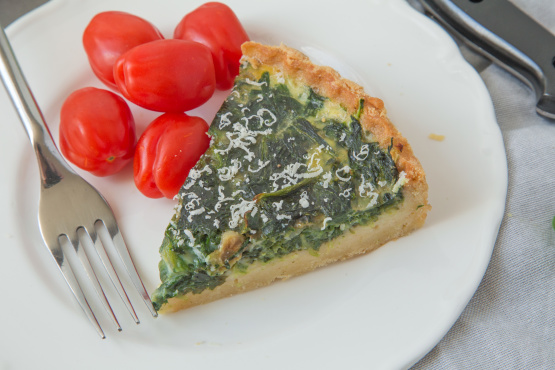

Spinach Quiche
Description Quiche is a savoury, open-faced pastry crust with a filling of savory custard with one or more of cheese, meat, seafood or vegetables. Quiche can be served hot or cold. It is part of French cuisine but is also popular in other countries, particularly as party food.

Wikipedia article
Ingredients
1 ready-made pie crust
3 tablespoons butter
1 small onion, chopped
1 cup frozen chopped spinach, thawed & drained
1 garlic clove (pressed, using garlic press)
6 eggs
1 cup milk
2 cups shredded colby-monterey jack cheese
salt & pepper
Directions
Pre-heat oven to 375 degrees.
Press pie crust into 9" pie pan.
Pre-bake pie crust for about 10 minutes. Set aside.
Sautee onion, garlic & spinach in butter until onion is soft - add salt & pepper to taste - set aside.
In medium mixing bowl - whisk together the eggs & milk.
Spread shredded cheese in bottom of pie crust.
Spread spinach mixture over cheese in pie crust.
Pour egg/milk custard over spinach mixture & cheese.
Bake at 375 degrees for 35 minutes. If crust starts to get too brown - cover edges with tin-foil.
Slice & serve.